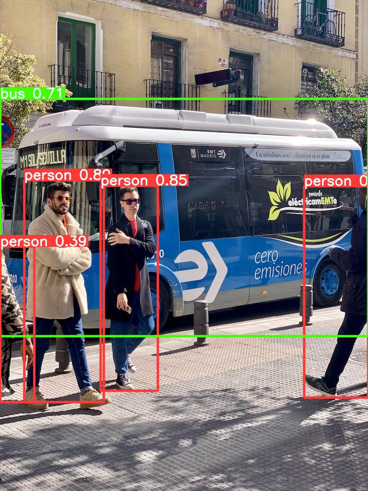
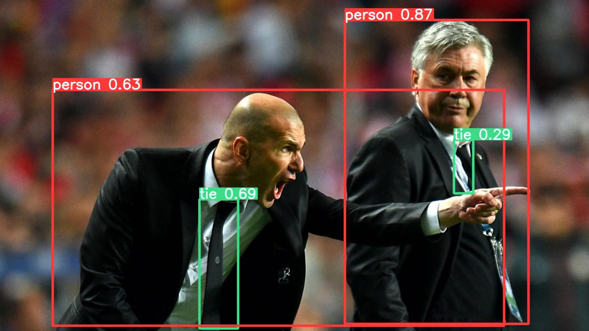

PyTorch Hub
内容
PyTorch Hub¶
📚 本指南介绍了如何从 PyTorch Hub https://pytorch.org/hub/ultralytics_yolov5 中加载 YOLOv5 🚀。
以前的做法¶
从 Python>=3.8 的环境开始，并安装了 PyTorch>=1.7，以及 pyyaml>=5.3 用于读取 YOLOv5 配置文件。要安装 PyTorch 请参见https://pytorch.org/get-started/locally 。 安装 YOLOv5 requirements。
$ pip install -r https://raw.githubusercontent.com/ultralytics/yolov5/master/requirements.txt
克隆 ultralytics/yolov5 资源库是不需要的 😃。
使用 PyTorch Hub 加载 YOLOv5¶
简单例子¶
这个例子从 PyTorch Hub 加载一个预训练的 YOLOv5s 模型作为 model，并传递一个图像进行推理。'yolov5s' 是最轻、最快的 YOLOv5 模型。有关所有可用模型的详细信息，请参见 README。
import torch
# 载入模型
model = torch.hub.load('ultralytics/yolov5', 'yolov5s') # or yolov5m, yolov5x, custom
Using cache found in C:\Users\xinet/.cache\torch\hub\ultralytics_yolov5_master
YOLOv5 2022-1-15 torch 1.10.0 CUDA:0 (NVIDIA GeForce GTX 1080 Ti, 11264MiB)
Fusing layers...
Model Summary: 224 layers, 7266973 parameters, 0 gradients
Adding AutoShape...
# 图片来源 https://ultralytics.com/images/zidane.jpg
img = 'images/zidane.jpg' # or file, PIL, OpenCV, numpy, multiple
# 推理本地图片
results = model(img)
# 结果
results.print() # or .show(), .save(), .crop(), .pandas(), etc.
image 1/1: 720x1280 2 persons, 2 ties
Speed: 40.5ms pre-process, 62.0ms inference, 26.0ms NMS per image at shape (1, 3, 384, 640)
results.xyxy[0] # 张量结果
tensor([[7.49628e+02, 4.30064e+01, 1.14831e+03, 7.08739e+02, 8.76500e-01, 0.00000e+00],
[4.33496e+02, 4.33950e+02, 5.17908e+02, 7.15133e+02, 6.58129e-01, 2.70000e+01],
[1.13316e+02, 1.96360e+02, 1.09305e+03, 7.10308e+02, 5.96341e-01, 0.00000e+00],
[9.86140e+02, 3.04344e+02, 1.02797e+03, 4.20159e+02, 2.85011e-01, 2.70000e+01]], device='cuda:0')
results.pandas().xyxy[0] # pandas 结果
| xmin | ymin | xmax | ymax | confidence | class | name | |
|---|---|---|---|---|---|---|---|
| 0 | 749.628357 | 43.006378 | 1148.310181 | 708.739380 | 0.876500 | 0 | person |
| 1 | 433.496338 | 433.949524 | 517.907959 | 715.133118 | 0.658129 | 27 | tie |
| 2 | 113.315674 | 196.359955 | 1093.051270 | 710.308350 | 0.596341 | 0 | person |
| 3 | 986.139587 | 304.344147 | 1027.974243 | 420.158539 | 0.285011 | 27 | tie |
实例细节¶
这个例子显示了用 PIL 和 OpenCV 图像源进行的 分批推理。结果可以打印到控制台，保存到 runs/hub，在支持的环境中 显示到屏幕上，并作为 tensors 或 pandas 数据帧返回。
下面的图片可以直接下载：
for f in ['zidane.jpg', 'bus.jpg']:
torch.hub.download_url_to_file('https://ultralytics.com/images/' + f, f)
或者直接使用本地图片：
_dir = 'images/'
imgs = [_dir + f for f in ('zidane.jpg', 'bus.jpg')]
# 推理
results = model(imgs)
results.print() # or .show(), .save()
image 1/2: 720x1280 2 persons, 2 ties
image 2/2: 1080x810 4 persons, 1 bus
Speed: 37.8ms pre-process, 20.0ms inference, 3.5ms NMS per image at shape (2, 3, 640, 640)
from PIL import Image
from cv2 import cv2
img1 = Image.open('images/zidane.jpg') # PIL image
img2 = cv2.imread('images/bus.jpg')[:, :, ::-1] # OpenCV image (BGR to RGB)
imgs = [img1, img2] # batch of images
results = model(imgs, size=640) # includes NMS
# 结果
results.print()
results.save() # or .show()
image 1/2: 720x1280 2 persons, 2 ties
image 2/2: 1080x810 4 persons, 1 bus
Speed: 26.5ms pre-process, 13.5ms inference, 4.0ms NMS per image at shape (2, 3, 640, 640)
Saved 2 images to runs\detect\exp2
 
所有的推理选项见 YOLOv5 autoShape() 前向方法。
推理设置¶
推理设置，如 置信度阈值、NMS IoU 阈值 和 类 过滤器是模型属性，可以通过以下方式修改：
model.conf = 0.25 # confidence threshold (0-1)
model.iou = 0.45 # NMS IoU threshold (0-1)
model.classes = None # (optional list) filter by class, i.e. = [0, 15, 16] for persons, cats and dogs
results = model(imgs, size=320) # custom inference size
results.print()
image 1/2: 720x1280 3 persons, 2 ties
image 2/2: 1080x810 3 persons, 1 bus
Speed: 2.0ms pre-process, 21.5ms inference, 15.5ms NMS per image at shape (2, 3, 320, 320)
输入通道¶
要加载一个预训练的 YOLOv5s 模型，有 4 个输入通道而不是默认的 3 个：
model = torch.hub.load('ultralytics/yolov5', 'yolov5s', channels=4)
在这种情况下，模型将由预训练的权重组成，除了 最开始的输入层，它的形状不再与预训练的输入层相同。输入层将继续由随机权重初始化。
类的数量¶
要加载一个预训练的 YOLOv5s 模型，有 10 个输出类，而不是默认的 80 个：
model = torch.hub.load('ultralytics/yolov5', 'yolov5s', classes=10)
在这种情况下，模型将由预训练的权重组成，除了输出层，输出层的形状不再与预训练的输出层相同。输出层将继续由随机权重初始化。
强制重新加载¶
如果您在上述步骤中遇到问题，设置 force_reload=True 可能会有帮助，它可以丢弃现有的缓存并强制从 PyTorch Hub 重新下载最新的 YOLOv5 版本。
model = torch.hub.load('ultralytics/yolov5', 'yolov5s', force_reload=True) # force reload
训练¶
要加载 YOLOv5 模型进行训练而不是推理，请设置 autoshape=False。要加载一个具有随机初始化权重的模型（从头开始训练），使用pretrained=False。
model = torch.hub.load('ultralytics/yolov5', 'yolov5s', autoshape=False) # load pretrained
model = torch.hub.load('ultralytics/yolov5', 'yolov5s', autoshape=False, pretrained=False) # load scratch
Base64 结果¶
用于 API 服务。详见 https://github.com/ultralytics/yolov5/pull/2291 和 Flask REST API 例子。
import base64
from io import BytesIO
results = model(imgs) # inference
results.imgs # array of original images (as np array) passed to model for inference
results.render() # updates results.imgs with boxes and labels
for img in results.imgs:
buffered = BytesIO()
img_base64 = Image.fromarray(img)
img_base64.save(buffered, format="JPEG")
# base64 encoded image with results
res = base64.b64encode(buffered.getvalue()).decode('utf-8')
print(res)
JSON 结果¶
一旦使用 .to_json() 方法转换为 .pandas() 数据帧，结果就可以以 JSON 格式返回。JSON 格式可以使用 orient 参数进行修改。详见 pandas .to_json() 文档 。
results = model(imgs) # inference
results.pandas().xyxy[0].to_json(orient="records") # JSON img1 predictions
'[{"xmin":157.9674682617,"ymin":201.7145080566,"xmax":751.6185302734,"ymax":686.0665283203,"confidence":0.9025849104,"class":0,"name":"person"},{"xmin":770.92578125,"ymin":53.1617126465,"xmax":1117.6053466797,"ymax":706.3565673828,"confidence":0.9000060558,"class":0,"name":"person"},{"xmin":436.2830810547,"ymin":432.2611083984,"xmax":514.8706054688,"ymax":689.2235107422,"confidence":0.605379045,"class":27,"name":"tie"},{"xmin":1140.7426757812,"ymin":382.8111572266,"xmax":1274.3686523438,"ymax":708.5679931641,"confidence":0.345140636,"class":0,"name":"person"}]'